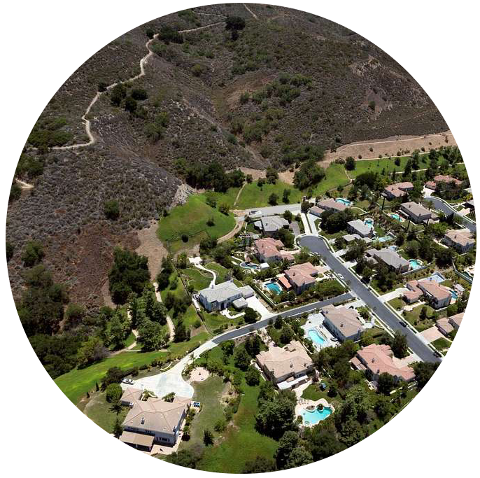
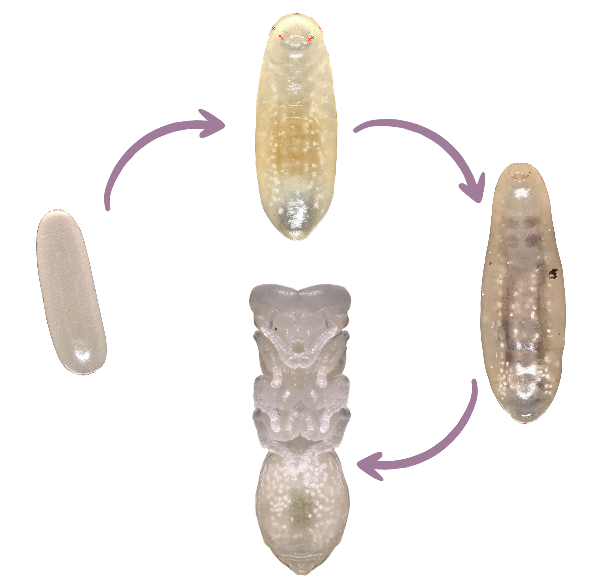
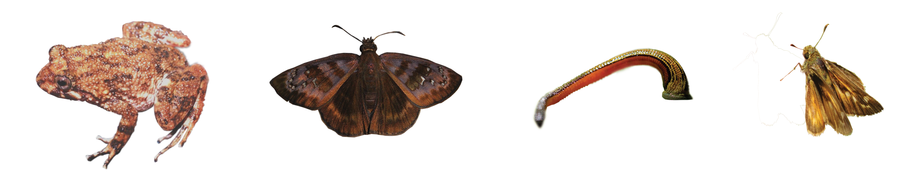

Research
Current research

How can one genome produce multiple, highly divergent phenotypes?
In some ant species, multiple distinct adult morphologies can develop from a single genotype via developmental plasticity, resulting in multiple, distinctive worker morphs. You can see this in the video to the left: the large-gastered queen and much smaller worker ants are genetically identical. My research leverages comparative genomics and developmental transcriptomics in the ant genus Cephalotes to better understand the genetic mechanisms which may produce ant morphs.

How do landscape factors influence evolutionary processes?
Evolutionary patterns and processes are influenced by landscapes. When the landscape reduces population connectivity, neutral or adaptive processes may cause populations to diverge, potentially resulting in outcomes ranging from local adaptation to loss of genetic diversity in isolated populations. Conversely, landscapes may facilitate population connectivity. Work in my group seeks to understand these patterns in Southern California insects, including native harvester ants (Pogonomyrmex sp.).
(Image from Carol Highsmith, Library of Congress Collection)

How does trait (de)coupling through development influence diversification?
Insects, particularly holometabolous insects, produce multiple phenotypes throughout their life cycle: eggs, larvae, pupae, and adults. If different life stages are adapted to different conditions and thus their traits are decoupled across development, this decoupling may promote diversification. Research in this area seeks to test this hypothesis, exploring whether trait decoupling does drive diversification and what kinds of traits are more or less likely to become decoupled.
Past projects
How can we use invertebrate-ingested DNA to answer conservation questions?
I previously worked with scientists at the American Museum of Natural History to determine which genes are most effective at identifying the vertebrate hosts of terrestrial bloodfeeding leeches, using DNA derived from the leech gut. I also examined the diversity of parasites harbored by the leeches in our dataset. For a PDF of the paper that came from this project, click here.
A subsequent collaboration with scientists at the AMNH used bloodmeal DNA to determine the origin of leeches smuggled into the Toronto International Airport. For a PDF of the paper that came from this project, click here.
If you’d like to see the presentation on these projects that I gave in 2019, click here.
How does population fragmentation impact butterfly population genetics?
With scientists at New College of Florida and the University of Florida, I contributed to conservation genetics studies of the federally-listed Dakota Skipper butterfly (Hesperia dacotae) and of the rare Florida Duskywing Skipper (Ephyriades brunnea), primarily working with Dr. Emily Heffernan. These projects used microsatellite markers to describe patterns of genetic drift, population isolation, and genetic diversity in each species. For a PDF of our publication on the Florida Duskywing, click here.
